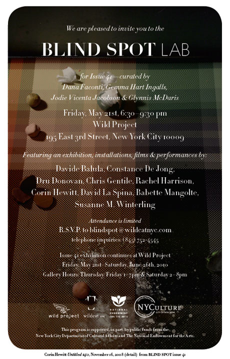

exhibition archive |
||
|
We are pleased to invite you to the Blind Spot Lab & Exhibition for Issue 41Curated by Dana Faconti, May 21 – June 26, 2010 Opening Reception: Featuring an exhibition, installations, films, and performances by
Gallery Hours: |
 This program is supported, in part, by public funds from the New York City Department of Cultural Affairs and The National Endowment for the Arts. Issue 41 was collaboratively edited by Dana Faconti, Gemma Hart Ingalls, Jodie Vicenta Jacobson, and Glynnis McDaris, and features work by Davide Balula, Joe Deal, Constance DeJong, John Divola, Dru Donovan, Chris Gentile, Rachel Harrison, Corin Hewitt, David La Spina, Elad Lassry, Babette Mangolte, Ted Partin, Thomas Roma, Angela Strassheim, Padraig Timoney, Sara VanDerBeek, and Susanne M. Winterling. Click here to browse the contents of this issue or to subscribe to Blind Spot. |
|
exhibition archive |
|||
| 2016 | 2015 | 2014 | 2013 |
| 2011 | 2010 | 2009 | 2008 |